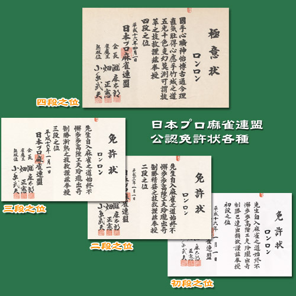

美国中小学智力课教麻将 日本职业牌手按段位分级
#1 美国中小学智力课教麻将 日本职业牌手按段位分级 作者：竹子 发表时间：2008-11-26 17:44:39
中国世界民族文化交流促进会麻将文化交流中心主任江选旗介绍，欧美选手喜欢麻将，更侧重于麻将的科学性。比赛中，选手们似乎更对博弈中的概率、计算规则与规律感兴趣。在他们看来，把麻将用于赌博是件匪夷所思的事情。
“麻将在海外发展最好的还是日本。”江选旗介绍说，麻将在日本非常普及，全国约有15000个麻将馆。走在大街上，到处可见高悬着写有“麻雀”两个汉字的麻将店招牌。千叶县还建立世界第一家“麻将博物馆”，收藏有中国清代皇帝所用麻将。
2008年是麻将传入日本100周年，起初日本也曾盛行以麻将为赌具，经几代日本有识之士不懈努力，如今已发展为健康的“绅士麻将”，规定了“20条礼仪”。如果要当职业牌手，必须通过麻将协会笔试。举办每年一届的全国麻将大赛。效仿围棋段位制，根据水平高低实行分级。
美国也有不少麻将组织，其中全美麻将联盟是最大的一个，拥有50万名会员。“在中国说小孩下围棋是表扬孩子聪明，要说小孩子打麻将是‘骂人’。”江选旗介绍，美国中小学的智力课是打麻将。在美国弗吉尼亚州阿灵顿市的托马斯·杰斐逊学校，午餐时间，餐桌上除了摆着常见的薯条、巧克力和牛奶等食物之外，还有一样不寻常的东西———麻将。孩子们边吃边搓麻将。差不多10年前，这所学校开始教学生如何打麻将了。该校师生看来，中国人这种游戏千变万化，动脑筋的人才能玩好。 据长江日报
#2 Re:美国中小学智力课教麻将 日本职业牌手按段位分级 作者：nara 发表时间：2008-11-26 19:21:33
日本職業麻將聯盟的段位免許狀

［ 孤竹 于 2008-11-27 14:09:50 时奖励此帖[金币加 20 威望加1］